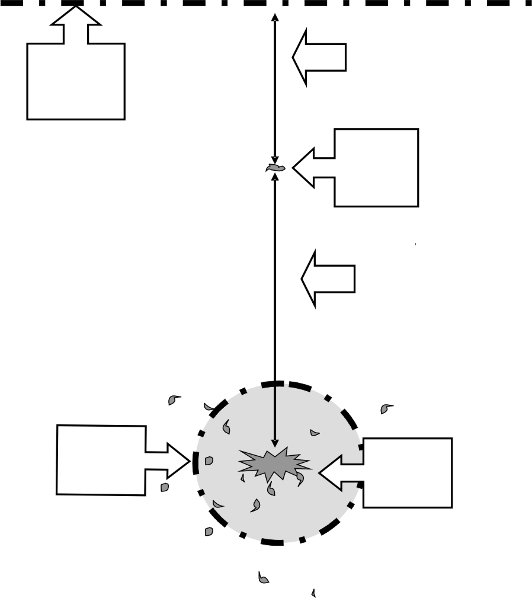
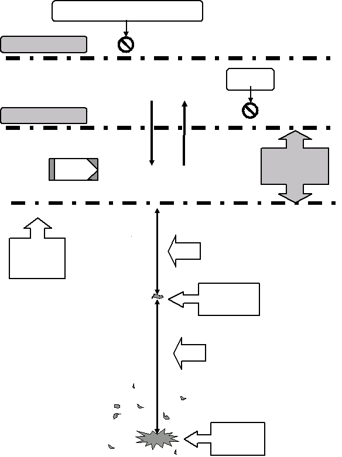
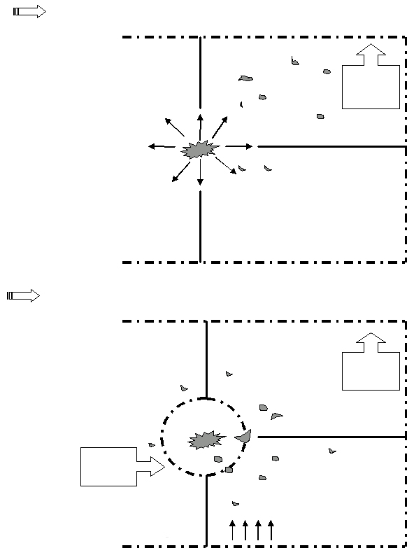

Para administrar uma perícia em local de explosão de maneira eficaz, é neces sária uma equipe trabalhando com afinco e em verdadeira sintonia. Apresentamos, a seguir, técnicas de exames em locais de explosão de bomba, utilizadas com sucesso em investigações dessa natureza, para auxiliar aqueles que tenham de executar tais tarefas a fazê-las de forma criteriosa, visando, em última análise, atingir o objetivo principal, ou seja, descobrir a autoria do ato criminoso, com base em provas materiais.
O exame de um local de explosão requer a formação de uma equipe de trabalho com atribuições previamente definidas para seus componentes. É necessário seguir um Procedimento Operacional Padronizado (POP), que é o documento que contém as atribuições dos membros da equipe e cuja finalidade é assegurar que nada seja ignorado no exame do local, aumentando considera velmente o sucesso da missão. Em face das peculiaridades de locais dessa natureza, várias tarefas terão de ser cumpridas, podendo ser necessária uma equipe numerosa, mas nada impede que membros da equipe desempenhem múltiplas funções, desde que seja seguido o POP estabelecido.
As atribuições dos membros da equipe são assim distribuídas: Chefe da equipe
Fotógrafo
Grupo de busca de vestígios
Grupo de busca do local da explosão (epicentro)
Perito em vestígios
Desenhista
Papiloscopistas
Perito químico
Assessor de imprensa Pessoa designada como porta-voz para tratar com a imprensa, servindo de mediador entre esta e a investigação em curso.
No trato com a imprensa, é melhor não fornecer informação nenhuma do que fornecer informação falsa. Equipamentos Deve-se produzir uma lista de equipamentos individuais e para o trabalho da equipe. A lista apresentada a seguir é apenas uma fonte de referência, adaptável ao estilo, à casuística e à disponibilidade de recursos de cada equipe. Equipamento pessoal
Equipamento para a equipe
Comunicação Os objetivos de uma equipe de investigação pós-explosão são determinar:
O sucesso da investigação depende da comunicação. Os métodos mais comumente utilizados são: mensageiros, rádios transcep tores ou instruções em voz alta. Logicamente, deve-se observar a segurança e a privacidade da informação, estabelecendo o meio mais adequado para o caso. Atendimento a um local de explosão Suponha um cenário de explosão ocorrida há alguns minutos. Trabalhadores e residentes próximos ao local do evento começam a chegar na tentativa de prestar algum auxílio ou por mera curiosidade, formando uma multidão. Uma sensação de confusão e pânico está no ar, e você, que representa o poder público, chega ao local. Com sorte, chegará antes da imprensa. a) Avalie, então, a necessidade de solicitar segurança. b) Avalie quem necessita de cuidados médicos. c) Verifique perigos na área, como:
Levantamento preliminar do local Essa fase é a base para administrar e organizar o plano de ação, estabele cendo o POP a ser executado. A inspeção preliminar deve ser realizada pelo menor número de pessoas possível, devendo incluir um especialista em bombas. Tem por finalidade:
Estabelecimento dos perímetros Perímetro externo O perímetro externo geralmente é marcado em um ponto 50% maior que a distância entre o local da explosão da bomba e a maior distância onde foi encontrado um vestígio no levantamento preliminar. Por exemplo: se a maior distância de um vestígio encontrado no levantamento preliminar está a 10 m do centro da explosão, estabelecer a marcação do perímetro externo em 15 m do centro da explosão. Após determinar o perímetro externo, isole o local, utilizando fitas ou outra forma de preservação do espaço a ser trabalhado. Perímetro interno Estabeleça um perímetro interno ao redor do centro da explosão e isole-o. O cenário de um local de explosão de bomba deve ser controlado o máximo possível, para que não se percam vestígios e para que a equipe possa trabalhar com privacidade. Posto de comando Tão rápido quanto possível, o chefe da equipe deve encontrar um local ade quado para posicionar o posto de comando. Sua localização tem de ser conhecida pelos membros da equipe e órgãos que estejam trabalhando em conjunto. Busca no local As buscas no local devem ser conduzidas segundo a teoria de que tudo o que estava na cena antes da explosão da bomba ainda está, a menos que tenha evaporado com a explosão. As buscas não devem terminar até que alguns itens sejam encontrados. A afirmação de que uma explosão causou tanta destruição que sua causa deverá permanecer desconhecida raramente é verdadeira. Documentação A documentação bem feita das tarefas executadas é fundamental para auxiliar na produção do laudo definitivo para a reconstrução do artefato, a reconstituição do local e as investigações em curso. Como sugestão, são apresentados critérios para a criação de quatro tipos de formulários que podem ser utilizados pela equipe: Formulário para registro de ocorrência - serve para documentar, em breves descrições, os eventos principais e os horários em que ocorreram, como por exemplo, a chegada ao local, nomes dos contatos pessoais, interrupções do trabalho e respectivos motivos, etc. Formulário de registro fotográfico - serve para anotar as seqüências foto gráficas, os equipamentos e as escalas utilizados, etc. Formulário para diagramas e croquis do local Formulário de localização de vestígios - usado para relacionar o vestígio encontrado, com a devida amarração no local, o número da fotografia a que corresponde, o método de coleta e empacotamento e quem o encontrou. Depois de realizados todos os registros necessários na documentação pró pria, esta deve ser encaminhada para a formalização da apreensão em auto próprio.
Busca a partir do centro da explosão Essa técnica é aplicada quando podem ser obtidas pistas iniciais que darão informações a respeito do artefato. Dependendo do poder da explosão, da quantidade e qualidade do explosivo empregado, partes significativas do DEI serão encontradas em locais relativamente próximos do epicentro. Procedimentos
Busca simultânea em toda a área da explosão Em áreas de explosão de bomba de grande poder, é melhor delimitar uma área maior, pois se for muito pequena, os vestígios serão destruídos, recolhidos ou não localizados, já que estariam fora do perímetro. Procedimentos
Espiral - tem início em ponto próximo ao centro da explosão, sendo realizada em espiral em torno do local, seguindo até o limite do perímetro externo. Esse padrão de busca é aplicado, geralmente, em ambientes menores, como uma sala. Rede - o local é dividido e marcado com fitas, cordas ou barbantes, identifi cando-se cada espaço com letras, números ou ambos, os quais são vistoriados individualmente. Quadrante, zona, setor - a cena do crime é dividida em quadrantes ou zonas e subdividida em setores, os quais são marcados e identificados com letras, números ou ambos. Esse padrão é aplicável em grandes áreas abertas. Fileiras ou linhas - esse padrão é particularmente eficiente em grandes áreas, permitindo uma busca sistemática com número limitado de pessoas. Os compo nentes do grupo alinham-se, lado a lado, a uma distância equivalente a braços abertos, para vistoriar a área. Ao encontrar um vestígio gritam: - PARE! Observam e tentam identificar a evidência, passando a informação ao resto do grupo, mar cando o local onde se encontra o vestígio e a fileira continua vistoriando todo o quadrante, passando aos quadrantes seguintes, até completar toda a área. Perímetros internos e externos

10m Perímetro externo (marcar) Vestígio mais distante 20m Perímetro interno Epicentro da (marcar) explosão Croqui 1 - Perímetros interno e externo. Técnicas de busca utilizadas em perícias de locais de explosão

Multidão
Mídia
Perímetro 10m externo (marcar) Vestígio mais distante 20m Epicentro da explosão Croqui 2 - Preservação da cena do crime. Técnicas de busca utilizadas em perícias de locais de explosão

PARTINDO DO CENTRO DA EXPLOSÃO Motivo: - pistas iniciais Perímetro externo (marcar) SIMULTÂNEA Motivo: - grandes áreas - liberação do local Perímetro externo (marcar) Perímetro interno (marcar) Fileira Croqui 3 - Técnicas de busca.
Local Data Identificador do Preparado por Assistentes Horário Descrição / Informação Pertinente Formulário 1 – Amostra de Registro Administrativo
| Local Data Identificador do Preparado por Assistentes | Referência Uso ou não de Pontos cardeais Evidência Objetos fixos Medidas Chave / Legenda |
|---|---|
| Formulário 2 – Amostra de Esquema/Diagrama da Cena do Crime |
Local Data Identificador do Preparado por Assistentes
| I t e m # | Local | Recuperado por | Foto | M é t o d o d e Empacotamento | |||
|---|---|---|---|---|---|---|---|
| Formulário 3a – Amostra de Registro de Recuperação de Evidência |
Local Máquina fotográ Data Filme ou resolu Identificador do Observações Preparado por Assistentes
| I t e m # | Descrição do Assunto da Fotografia | Câmera configura ção | U s o d e escala | Esboço (se aplicável) | |
|---|---|---|---|---|---|
| Formulário 3b – Amostra de Registro de Recuperação de Evidência |